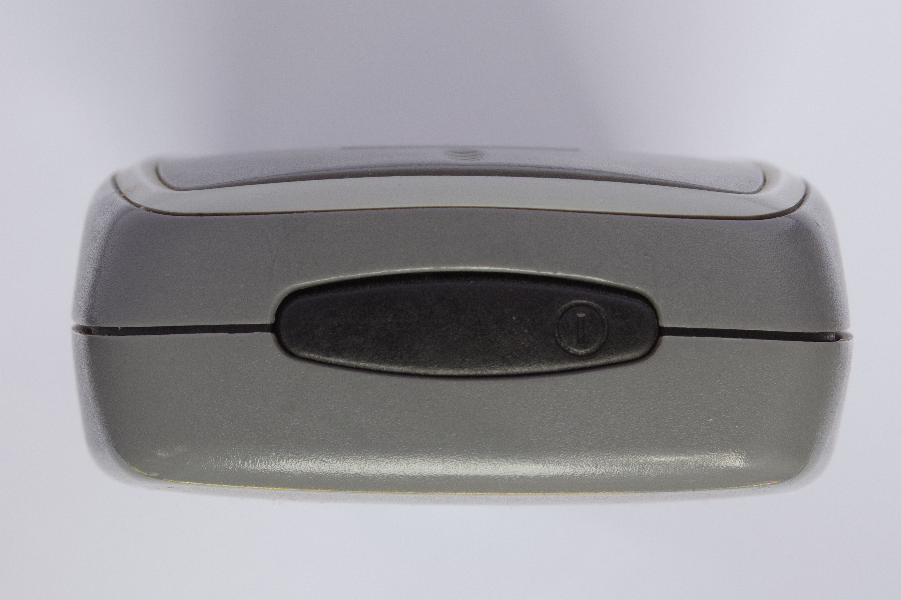
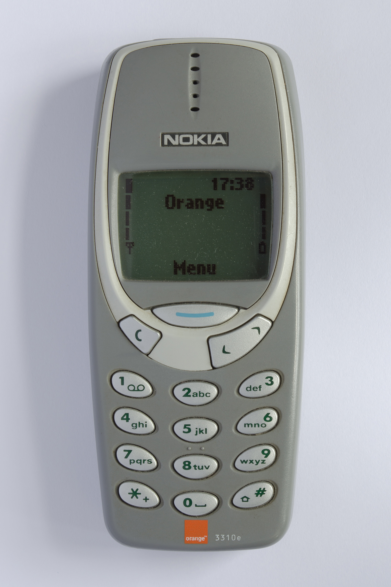
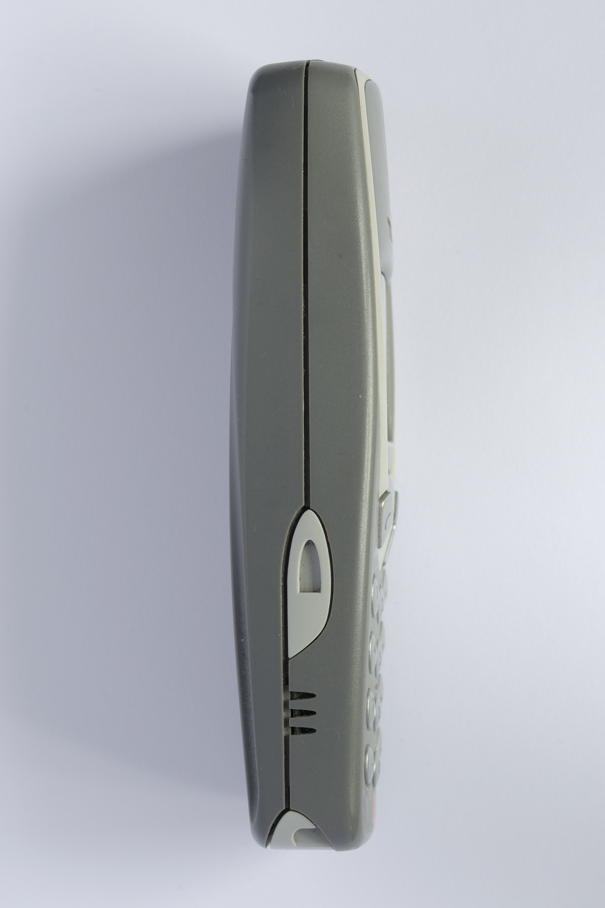
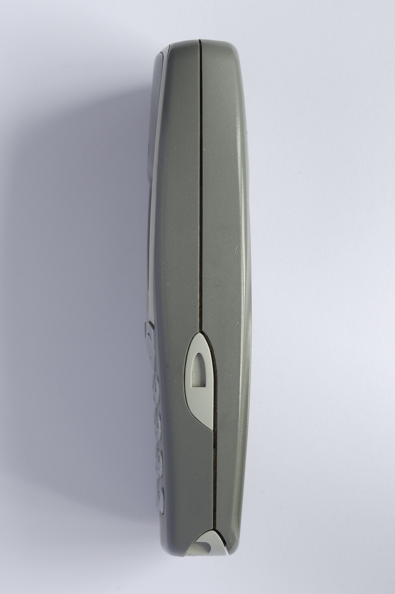
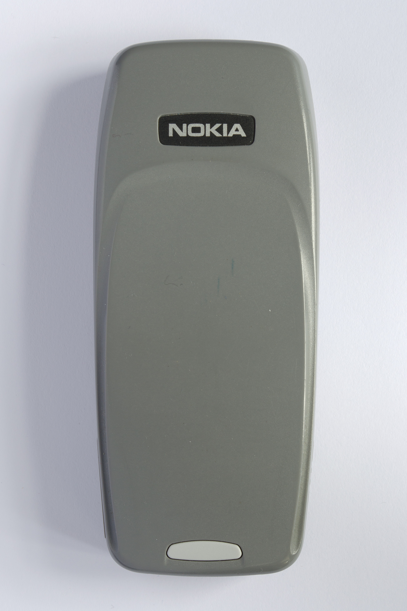
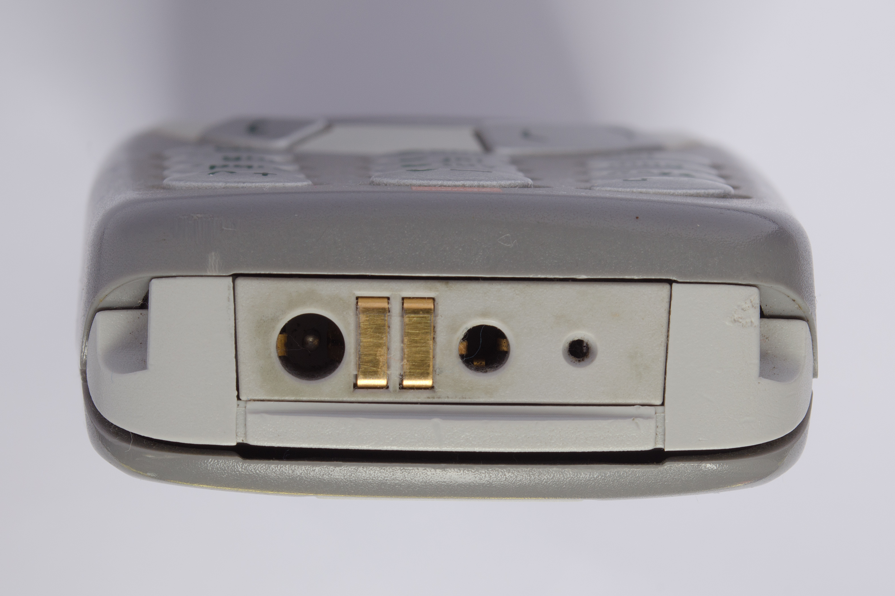

顶图
3150 × 2100 · 保存原图
按你的上传界面排列。点击照片查看原图，每个文件夹对应一个上传槽位。
同机实拍 6 张可用 · 左右 45° 暂缺
3150 × 2100 · 保存原图
本轮先留空

2704 × 4056 · 保存原图
本轮先留空

2750 × 4125 · 保存原图

2750 × 4125 · 保存原图

2704 × 4056 · 保存原图

3150 × 2100 · 保存原图